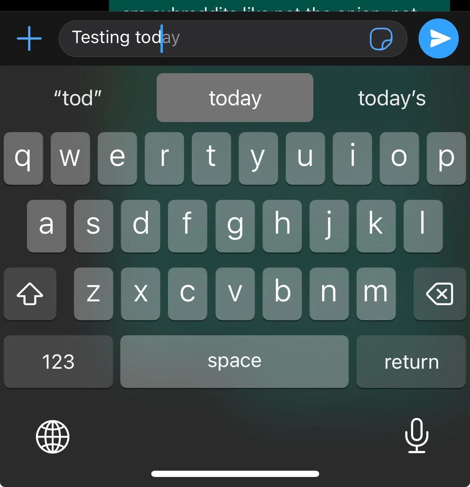

Oryginalna treść i tłumaczenie
EN: Minimize the user's memory load by making elements, actions, and options visible.
PL: Zmniejsz obciążenie pamięci użytkownika, pokazując mu elementy, działania i dostępne opcje.
Przykład ze strony internetowej
Źródło: PCMag – Google autocomplete
Przykład z aplikacji mobilnej

Źródło: Reddit – iPhone keyboard suggestions